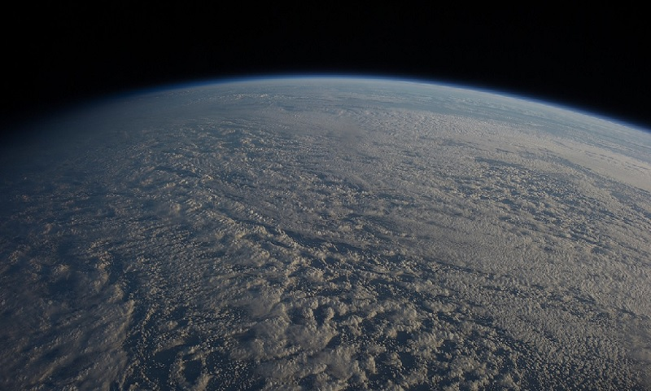

 Представьте мир без кислорода, без зелёных лесов, без урожаев пшеницы или яблок. Мир, где жизнь ограничена крохотными микроорганизмами в глубинах океана. Такой была Земля 2,4 миллиарда лет назад — до того, как произошло одно из величайших чудес эволюции: фотосинтез. Этот процесс не просто изменил планету — он создал условия для существования всего живого, включая нас. Давайте заглянем в тайны зелёной магии, которая кормит и дышит за всех.
На первый взгляд, формула фотосинтеза кажется простой:
Но за этой записью скрывается сложнейшая биохимическая симфония, которую миллиарды лет совершенствовала природа. Растения, водоросли и цианобактерии превращают солнечный свет в химическую энергию, создавая топливо для жизни. При этом они выделяют кислород — побочный продукт, ставший основой для дыхания всех сложных организмов.
Ключевой герой фотосинтеза — хлорофилл, пигмент, улавливающий солнечный свет. Почему растения зелёные? Дело в том, что хлорофилл поглощает в основном синие и красные лучи спектра, а зелёный отражает. Это «недостаток», который, однако, стал эволюционным преимуществом: зелёный свет менее энергичен, и его отражение защищает растения от повреждений в пик солнечной активности.
Но хлорофилл — не единственный участник. В листьях работают фотосистемы I и II, крошечные «солнечные станции», где свет разрывает молекулы воды, высвобождая электроны. Эти электроны запускают цепь реакций, в результате которых создаётся АТФ — универсальная «валюта» энергии для всех живых клеток.
Фотосинтез происходит в два этапа, словно двухчастная драма:
Световые реакции: В мембранах тилакоидов (структур в хлоропластах) энергия света превращается в химическую. Вода расщепляется на кислород, протоны и электроны. Кислород улетучивается в атмосферу, а протоны и электроны участвуют в создании АТФ и НАДФН — «энергетических носителей».
Цикл Кальвина (темновые реакции): Без участия света, но благодаря АТФ и НАДФН, углекислый газ из воздуха превращается в глюкозу. Этот процесс происходит даже ночью, пока хватает запасов энергии.
Удивительно, что растения «решают» задачу, над которой бьются учёные: как эффективно хранить солнечную энергию. В то время как солнечные панели имеют КПД 20–25%, естественный фотосинтез использует лишь 3–6% света. Но природа компенсирует это масштабом: ежегодно растения производят 100 миллиардов тонн органического вещества — больше, чем все заводы человечества за всю историю.
Около 2,4 млрд лет назад цианобактерии начали массово выделять кислород, вызвав Великую кислородную катастрофу. Для анаэробных организмов это стало экологической катастрофой, но для будущих форм жизни — подарком. Накопление кислорода в атмосфере привело к появлению озонового слоя, защищающего жизнь от ультрафиолета, и позволило развиться аэробным организмам, включая животных.
Без фотосинтеза не было бы угля, нефти или природного газа — все они образовались из остатков древних растений. Даже сегодня 99% энергии, потребляемой живыми существами, происходит от фотосинтеза.
Природа не остановилась на базовой версии фотосинтеза. Чтобы выжить в засухе, жаре или высокой конкуренции, растения развили уникальные стратегии:
C4-фотосинтез (у кукурузы, проса): Отдельные клетки сначала фиксируют CO₂ в четырёхугольную молекулу, что снижает потери энергии в жарком климате.
CAM-фотосинтез (у кактусов, ананасов): Растения открывают устьица ночью, чтобы поглотить CO₂, а днём используют его для синтеза глюкозы, экономя воду.
Эти адаптации — результат миллиардов лет «экспериментов», которые сейчас вдохновляют учёных на создание устойчивых к климату культур.
Учёные пытаются скопировать природу, чтобы решить энергетический кризис. Искусственный фотосинтез — это технологии, превращающие CO₂ и воду в топливо (например, водород или метан) под действием солнечного света. В 2020 году исследователи из Кембриджа создали «лист искусственного фотосинтеза», производящий формиат — чистое топливо, которое можно использовать для хранения энергии.
Если такие разработки станут массовыми, человечество сможет не только сократить выбросы CO₂, но и создать замкнутый цикл энергии, подобный природному.
Фотосинтез — это не просто биохимический процесс. Это связь между Солнцем и жизнью, между прошлым и будущим. Каждый вдох, который вы делаете, возможен благодаря кислороду, выделенному растениями. Каждый кусок хлеба — результат работы хлорофилла, превратившего свет в зерно.
Фотосинтез напоминает нам, что даже самая простая зелёная травинка — это миниатюрная фабрика, работающая на благо всей планеты. В эпоху изменения климата и экологических кризисов понимание этого процесса становится не просто наукой, а ключом к выживанию.
Чудеса фотосинтеза скрыты у нас на глазах: в шелесте листьев, в аромате кофе по утрам, в закате над полем пшеницы. Это процесс, который соединяет нас с Солнцем, с древними океанами и с будущим, которое мы строим. Возможно, самое большое чудо — в том, что, осознавая эту связь, мы можем научиться ценить и защищать дар жизни, который дала нам природа.
Как писал биолог Джеймс Лавлок: «Земля — это не просто планета. Это живой организм, и фотосинтез — его дыхание». А мы — часть этого дыхания.